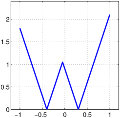
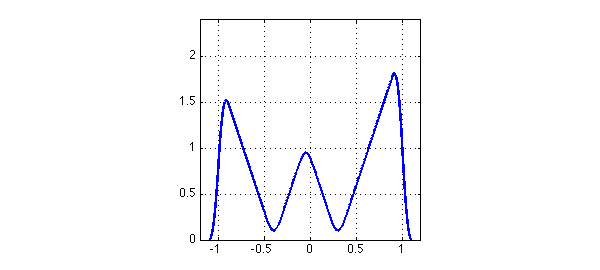
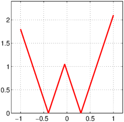

Here is a function with the shape of a W:
t = chebfun(@(t) t); f = 3*min(abs(t+.4),abs(t-.3)); LW = 'linewidth'; lw = 2; ax = [-1.2 1.2 0 2.4]; plot(f,LW,lw), axis(ax), axis square, grid on

And here is a narrow function with integral equal to $1$:
h = 0.1; s = chebfun(@(s) s,[-h h]); g = (h-abs(s))/h^2; plot(g,'k',LW,lw), axis([-1 1 0 12]), grid on
If we convolve the two functions, we get a W with rounded corners. At the ends, the "rounding" has brought the values down to $0$:
f2 = conv(f,g); plot(f2,LW,lw), axis(ax), axis square, grid on

Let's try a similar but different computation in which the W is not a real function of a real variable, but a complex function of a real parameter. Here is that complex function:
W = t + 1i*f(t); plot(W,'r',LW,lw), axis(ax), axis square, grid on

And here is its convolution with g:
W2 = conv(W,g); plot(W2,'r',LW,lw), axis(ax), axis square, grid on
Do you understand why this picture looks different from the previous one?